目录
本博客转载自阿里开源的 Java 诊断工具
Arthas是一款阿里巴巴开源的 Java 线上诊断工具，功能非常强大，可以解决很多线上不方便解决的问题。
Arthas诊断使用的是命令行交互模式，支持JDK6+，Linux、Mac、Windows 操作系统，命令还支持使用 tab 键对各种信息的自动补全，诊断起来非常方便。
这是它的官方网站：
https://alibaba.github.io/arthas/index.html
Github地址：
https://github.com/alibaba/arthas
看下Arthas的官方说明
当你遇到以下类似问题而束手无策时，Arthas可以帮助你解决：
1、这个类从哪个 jar 包加载的？为什么会报各种类相关的 Exception？
2、我改的代码为什么没有执行到？难道是我没 commit？分支搞错了？
3、遇到问题无法在线上 debug，难道只能通过加日志再重新发布吗？
4、线上遇到某个用户的数据处理有问题，但线上同样无法 debug，线下无法重现！
5、是否有一个全局视角来查看系统的运行状况？
6、有什么办法可以监控到JVM的实时运行状态？
看完是不是觉得太牛逼了？特别是它可以在线反编译类，可以不用加日志在线调试跟踪问题代码。
官方推荐使用 arthas-boot 进行安装，非常方便，以下是基于 Linux 系统环境进行演示，一般解决线上问题也是基于 Linux 环境。
在任何目录下载 arthas-boot 这个包。
wget https://alibaba.github.io/arthas/arthas-boot.jar
[root@VM_0_7_centos ~]# wget https://alibaba.github.io/arthas/arthas-boot.jar
--2019-07-30 14:48:31-- https://alibaba.github.io/arthas/arthas-boot.jar
Resolving alibaba.github.io (alibaba.github.io)... 185.199.108.153, 185.199.109.153, 185.199.110.153, ...
Connecting to alibaba.github.io (alibaba.github.io)|185.199.108.153|:443... connected.
HTTP request sent, awaiting response... 200 OK
Length: 98637 (96K) [application/java-archive]
Saving to: ‘arthas-boot.jar’
100%[==========================================================================================================>] 98,637 32.8KB/s in 2.9s
2019-07-30 14:48:36 (32.8 KB/s) - ‘arthas-boot.jar’ saved [98637/98637]使用 java -jar 命令执行 arthas-boot 包。（如果运行失败，建议进行全量安装arthas，参考文档中的全量安装章节）
java -jar arthas-boot.jar
[INFO] arthas-boot version: 3.1.1
[INFO] Found existing java process, please choose one and hit RETURN.
* [1]: 13062 spring-boot-best-practice-0.0.1-SNAPSHOT.jar运行 arthas-boot 后，控制台会显示所有 Java 进程，选择一个你需要诊断的进程。
如第二步所示，这里有只有一个 Java 进程，输入序号1，回车，Arthas会附到目标进程上，并输出日志：
[INFO] Start download arthas from remote server: https://maven.aliyun.com/repository/public/com/taobao/arthas/arthas-packaging/3.1.1/arthas-packaging-3.1.1-bin.zip
[INFO] Download arthas success.
[INFO] arthas home: /root/.arthas/lib/3.1.1/arthas
[INFO] Try to attach process 13062
[INFO] Attach process 13062 success.
[INFO] arthas-client connect 127.0.0.1 3658
,---. ,------. ,--------.,--. ,--. ,---. ,---.
/ O | .--. ''--. .--'| '--' | / O ' .-'
| .-. || '--'.' | | | .--. || .-. |`. `-.
| | | || | | | | | | || | | |.-' |
`--' `--'`--' '--' `--' `--' `--'`--' `--'`-----'
wiki https://alibaba.github.io/arthas
tutorials https://alibaba.github.io/arthas/arthas-tutorials
version 3.1.1
pid 13062
time 2019-07-30 14:49:34至此，安装、启动完成。
更多其他安装方式见：https://alibaba.github.io/arthas/install-detail.html
启动完成后，当前光标会进入 arthas 的控制台，接受各种操作命令。
下面，栈长会做几个常用命令的演示，让大家对它有一个基本的认识和快速上手的能力。
1、dashboard
显示当前系统的实时数据面板，按 ctrl+c 即可退出。
$ dashboard
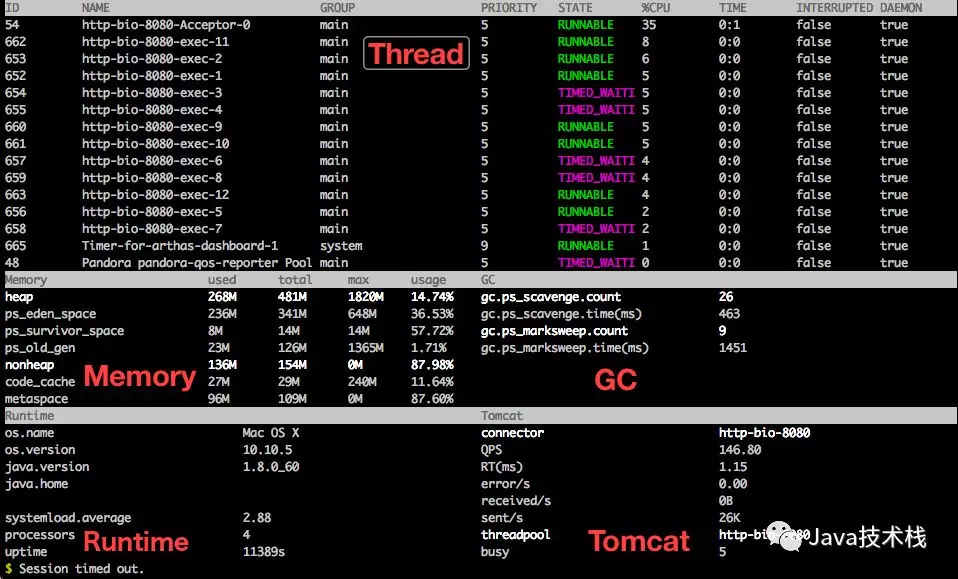
2. thread
查看当前 JVM 的线程堆栈信息。
thread id， 显示指定线程的运行堆栈：
$ thread 20
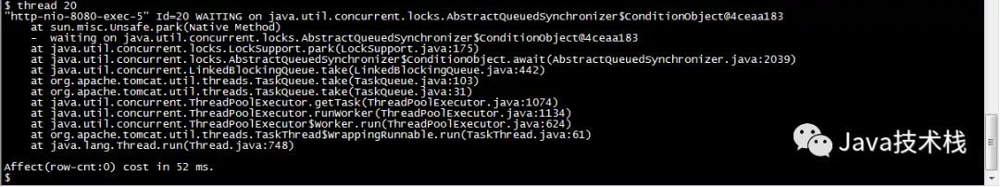
显示当前最忙的前N个线程并打印堆栈：
$ thread -n 3
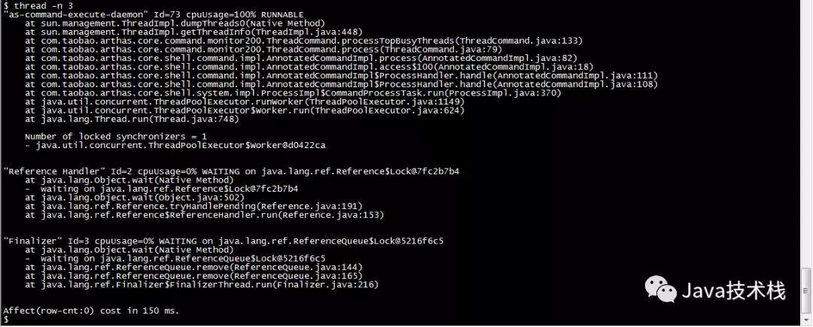
3. sc
查看 JVM 已加载的类详细信息。
$ sc -d *Test
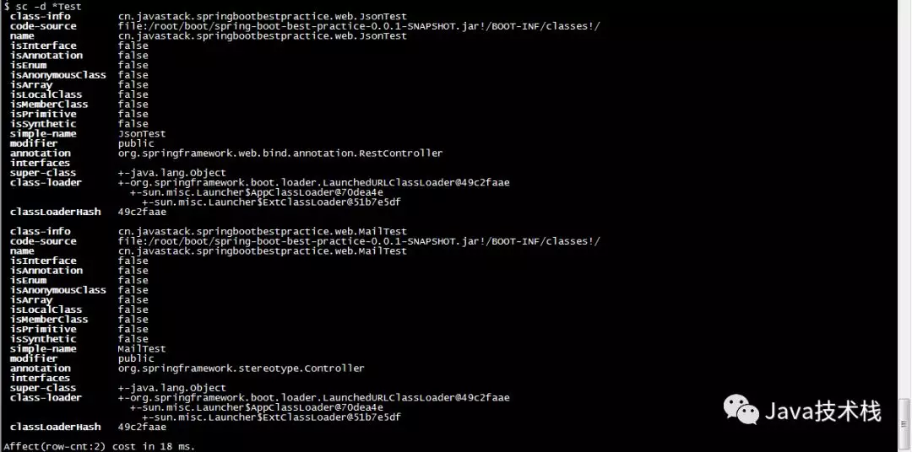
4. sm
查看已加载类的方法信息。
$ sm -d cn.javastack.springbootbestpractice.SpringBootBestPracticeApplication main
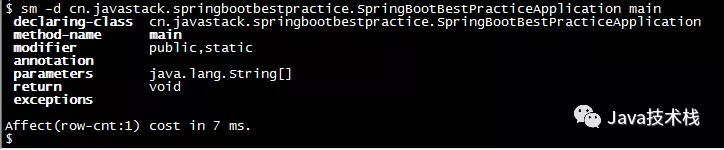
5. jad
反编译指定已加载类的源代码。
$ jad cn.javastack.springbootbestpractice.SpringBootBestPracticeApplication
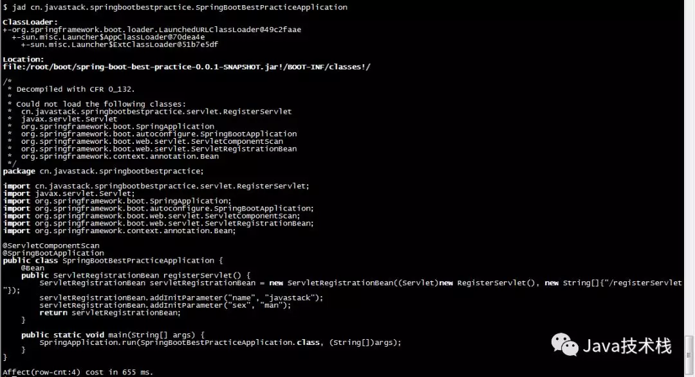
6. trace
显示方法内部调用路径，非实时返回的命令并输出方法路径上的总耗时，以及的每个节点上的详细耗时。
$ trace -j cn.javastack.springbootbestpractice.web.JsonTest getUserInfo
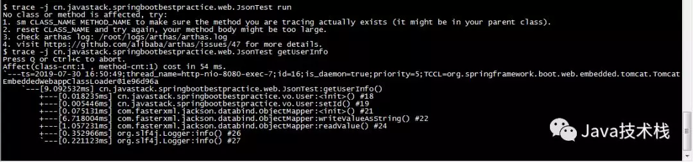
7. monitor
对某个方法的调用进行定时监控。
$ monitor cn.javastack.springbootbestpractice.web.JsonTest getUserInfo -c 5
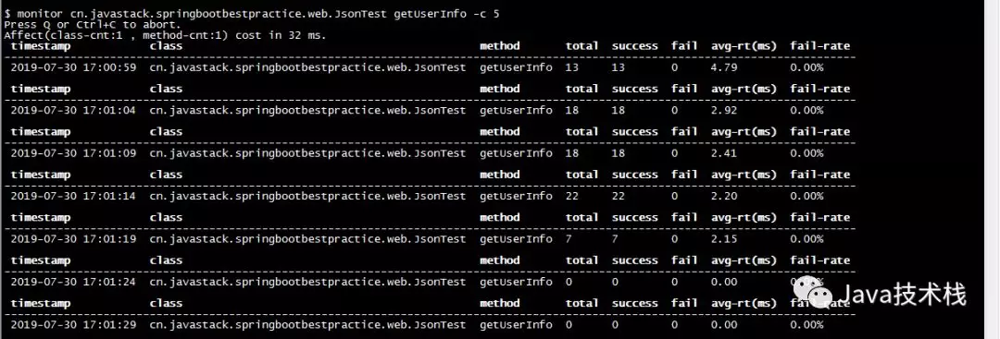
-c 5：表示每5秒统计一次，统计周期，默认值为120秒。
监控维度说明：
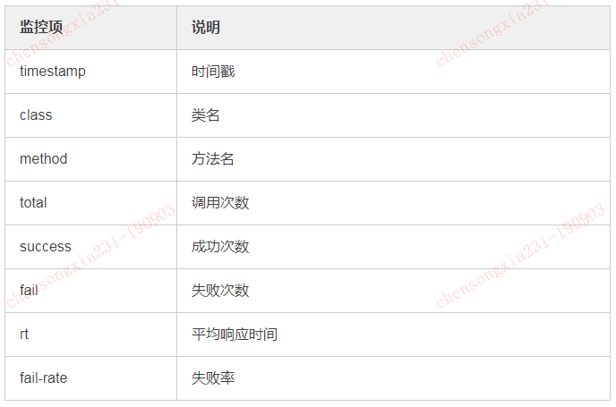
8. watch
观测方法执行数据，能方便的观察到指定方法的调用情况，如：返回值、抛出异常、入参等。
$ watch cn.javastack.springbootbestpractice.web.JsonTest getUserInfo '{params, returnObj}' -x 2 -b
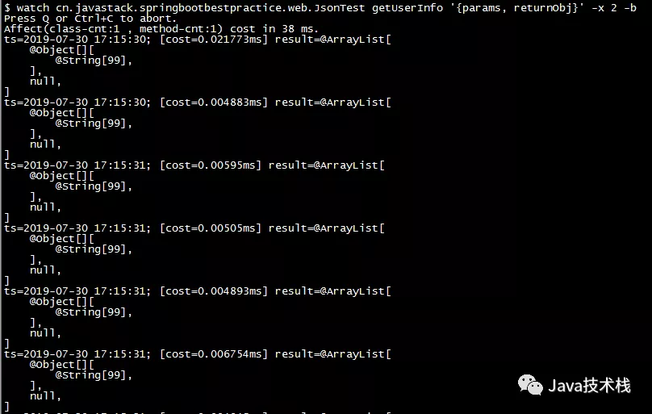
以上监控的是一个方法的入参情况，在方法执行前监控：-b，遍历深度：-x 2。
9. quit/exit
退出当前 Arthas。
这个命令仅退出当前连接的客户端，附到目标进程上的 Arthas 会继续运行，端口不会关闭，下次连接时可以直接连接使用。
10. shutdown
关闭 Arthas 服务端，退出所有 Arthas 客户端。
以上演示了 10 个命令的基本使用，各种命令的使用详情可以在命令带 --help 进行查阅。
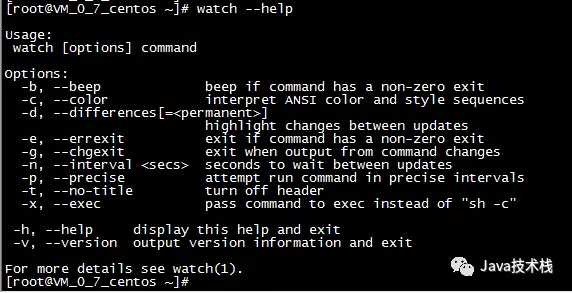
更多其他命令请参考：
https://alibaba.github.io/arthas/commands.html
总结下来，使用 Arthas 可以很方便的诊断一个 Java 应用程序，如：系统数据面板、JVM实时运行状态、类加载情况、监控方法执行情况、显示方法执行路径等。
Arthas这些实用的功能确实可以帮助我们解决一些常见的线上问题，也能独立于应用程序代码，但仅局限于在一个 JVM 进程内，如果是分布式系统，Arthas就有点难了。